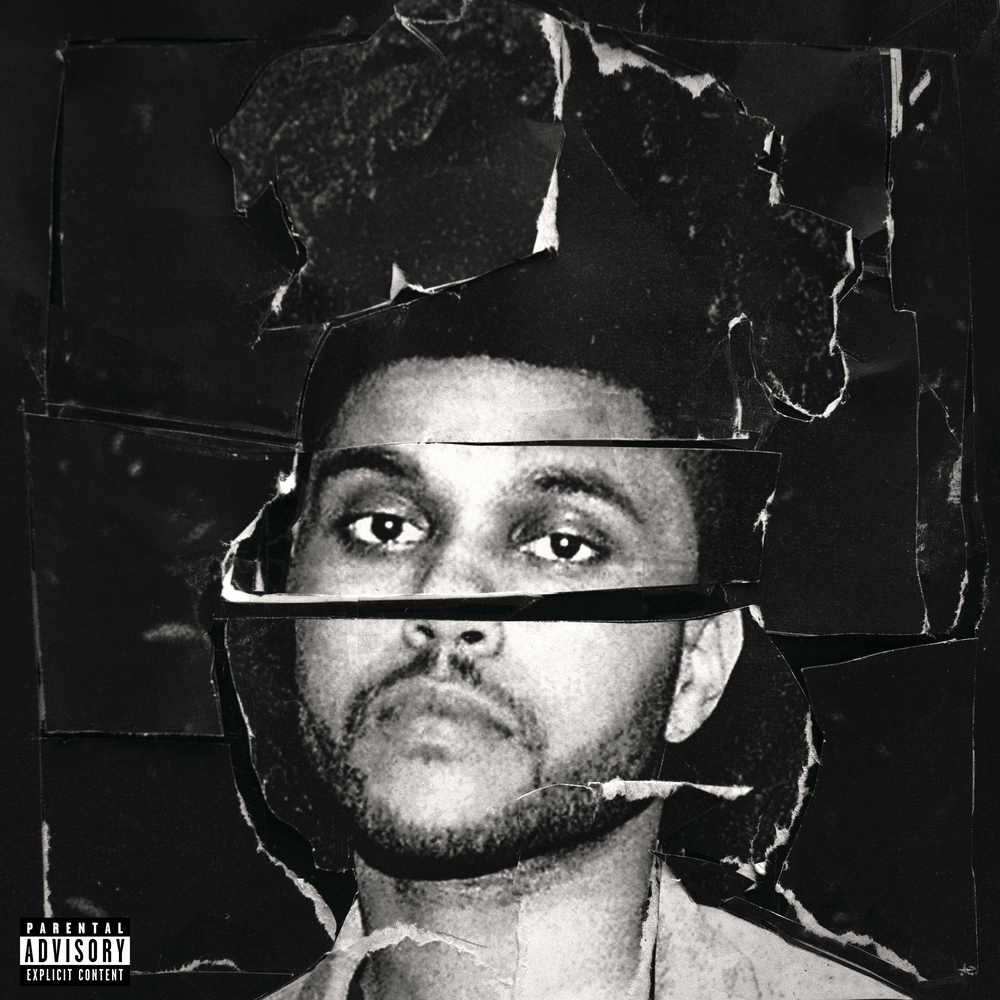
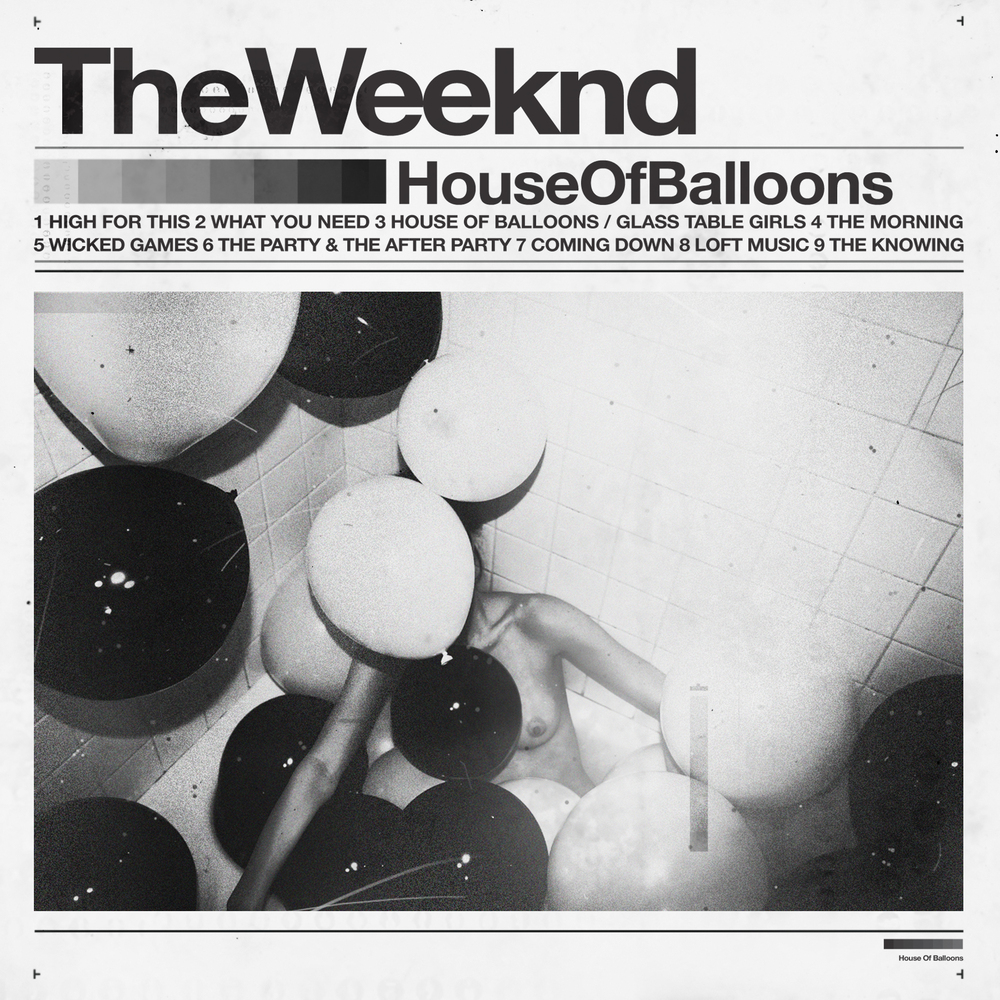
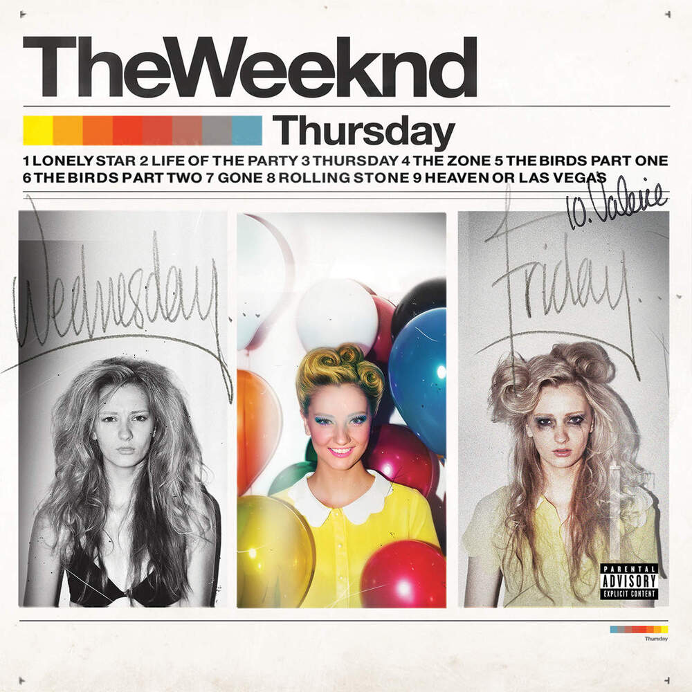

Trajetória
Início da Carreira
A carreira de The Weeknd começou em 2010, quando ele publicou as primeiras músicas no YouTube sem mostrar o rosto nem revelar o nome.
O som sombrio e a voz marcante chamaram a atenção do público e de outros artistas, e em 2011 ele lançou três mixtapes gratuitas na internet: House of Balloons, Thursday e Echoes of Silence.
Elas foram reunidas depois em um projeto único e renderam a ele um contrato com uma grande gravadora.
Sucesso Global
Em 2015, The Weeknd deixou de ser um nome do underground e passou a dominar as paradas de sucesso, com músicas que chegaram ao topo da Billboard e levaram seus primeiros Grammys.
A parceria com o Daft Punk em "Starboy", no ano seguinte, consolidou o novo estilo, mais pop e eletrônico.
O auge veio com o disco After Hours e o hit "Blinding Lights", em 2020, um dos maiores sucessos da década e atualmente a música mais ouvida da história do streaming.
Fase Atual
Nos últimos anos, The Weeknd levou a identidade visual dos discos para além da música, com turnês de grande produção e trabalhos no audiovisual, como o filme "Uncut Gems" e a série "The Idol".
Em 2022 ele lançou o álbum Dawn FM, sucessor de After Hours e segundo disco da trilogia, posteriormente em janeiro de 2025 chegou Hurry Up Tomorrow, acompanhado de um filme.
Hoje ele é um dos artistas mais ouvidos do mundo e segue reinventando o próprio personagem a cada fase.
Discografia
Álbuns de Estúdio:
-
Kiss Land
.jpg)
- Lançamento: 10 de setembro de 2013
- Gravadora: XO e Republic Records
- Faixas: 10
- Singles: "Kiss Land", "Belong to the World", "Love in the Sky", "Live For", "Pretty" e "Wanderlust"
- Convidado: Drake (em "Live For")
Kiss Land é o álbum de estreia de The Weeknd e o primeiro lançado oficialmente por uma grande gravadora, depois das três mixtapes gratuitas de 2011, reunidas em 2012 na coletânea Trilogy. O clima é sombrio e claustrofóbico, e o artista disse ter se inspirado em filmes de terror e em diretores como John Carpenter, David Cronenberg e Ridley Scott. A faixa-título, de cerca de sete minutos, fala da relação difícil dele com a fama.
A era também teve identidade visual própria: o clipe de "Live For", com Drake, saiu em setembro de 2013, e a turnê do disco usou um cenário inspirado em bairros de luz vermelha. O álbum estreou em segundo lugar na Billboard 200, nos Estados Unidos.
Tracklist:
- Professional
- The Town
- Adaptation
- Love in the Sky
- Belong to the World
- Live For (feat. Drake)
- Wanderlust
- Kiss Land
- Pretty
- Tears in the Rain
-
Beauty Behind the Madness

- Lançamento: 28 de agosto de 2015
- Gravadora: XO e Republic Records
- Faixas: 14
- Singles: "Often", "The Hills", "Can't Feel My Face", "In the Night" e "Acquainted"
- Convidados: Labrinth, Ed Sheeran e Lana Del Rey
Segundo álbum de estúdio, Beauty Behind the Madness mudou o rumo da carreira ao apostar em um som mais pop e animado do que o de Kiss Land. Os singles "The Hills" e "Can't Feel My Face" chegaram ao primeiro lugar da Billboard Hot 100, e o disco estreou em primeiro lugar em vários países. Ele também ganhou o Grammy de Melhor Álbum Urbano Contemporâneo em 2016 e foi indicado a Álbum do Ano.
O álbum inclui "Earned It", uma das duas músicas que o artista fez para a trilha sonora do filme Fifty Shades of Grey (Cinquenta Tons de Cinza), de 2015, ao lado de "Where You Belong". A canção foi indicada ao Oscar de Melhor Canção Original e ganhou o Grammy de Melhor Performance de R&B. O clipe de "Earned It" foi dirigido por Sam Taylor-Johnson, diretora do filme, e tem dançarinas de cabaré e a atriz Dakota Johnson. Já os clipes de "The Hills", "Can't Feel My Face" e "Tell Your Friends" foram dirigidos por Grant Singer, que continuou trabalhando com o artista na era seguinte.
Tracklist:
- Real Life
- Losers (feat. Labrinth)
- Tell Your Friends
- Often
- The Hills
- Acquainted
- Can't Feel My Face
- Shameless
- Earned It
- In the Night
- As You Are
- Dark Times (feat. Ed Sheeran)
- Prisoner (feat. Lana Del Rey)
- Angel
-
Starboy
.jpg)
- Lançamento: 25 de novembro de 2016
- Gravadora: XO e Republic Records
- Faixas: 18
- Singles: "Starboy", "I Feel It Coming", "Party Monster", "Reminder", "Rockin'", "Die for You" e "Secrets"
- Convidados: Daft Punk, Lana Del Rey, Kendrick Lamar e Future
Starboy é o terceiro álbum de estúdio, e o nome é uma pequena homenagem a David Bowie, a quem o artista chamou de o grande inventor. O disco traz parcerias com Daft Punk, Lana Del Rey, Kendrick Lamar e Future e foi lançado junto de um curta-metragem chamado Mania. Estreou em primeiro lugar na Billboard 200 e rendeu o Grammy de Melhor Álbum Urbano Contemporâneo em 2018. Em 2023, ganhou uma edição deluxe com três faixas extras: versões já lançadas de "Starboy", "Die For You" e "Reminder".
O clipe da faixa-título, dirigido por Grant Singer, mostra o artista matando a versão antiga de si mesmo e destruindo os próprios discos de platina, para marcar o visual novo da fase.
Tracklist:
- Starboy (feat. Daft Punk)
- Party Monster
- False Alarm
- Reminder
- Rockin'
- Secrets
- True Colors
- Stargirl Interlude (feat. Lana Del Rey)
- Sidewalks (feat. Kendrick Lamar)
- Six Feet Under
- Love to Lay
- A Lonely Night
- Attention
- Ordinary Life
- Nothing Without You
- All I Know (feat. Future)
- Die for You
- I Feel It Coming (feat. Daft Punk)
-
After Hours
.jpg)
- Lançamento: 20 de março de 2020
- Gravadora: XO e Republic Records
- Faixas: 14
- Singles: "Heartless", "Blinding Lights", "After Hours", "In Your Eyes" e "Save Your Tears"
- Convidados: Nenhum na edição padrão
After Hours, o quarto álbum de estúdio, abre uma fase mais sombria e cinematográfica e dá início à trilogia continuada em Dawn FM e Hurry Up Tomorrow. O título é o mesmo do filme de Martin Scorsese de 1985, e o visual da era foi inspirado em filmes como Casino, Fear and Loathing in Las Vegas e Uncut Gems, no qual o artista chegou a fazer uma ponta. O disco foi dedicado a um fã de longa data, o apresentador do podcast XO, que morreu na véspera do lançamento. Dias depois, saiu uma edição deluxe com remixes.
Os clipes contam a história de uma noite fora de controle em Las Vegas. O terno vermelho, marca registrada da era, estreou no clipe de "Heartless", em dezembro de 2019, e o rosto do artista aparece cada vez mais machucado e enfaixado: em "Blinding Lights" ele está sangrando, em "In Your Eyes" é decapitado e em "Too Late" a cabeça é colocada em outro corpo. Ele explicou que as bandagens eram uma crítica à cultura das celebridades de Hollywood e à manipulação do próprio corpo para agradar aos outros.
É um álbum de recordes. Estreou em primeiro lugar na Billboard e chegou ao topo das paradas em outros 20 países, e três dos singles ("Heartless", "Blinding Lights" e "Save Your Tears") ficaram em primeiro na Billboard Hot 100. "Blinding Lights" foi a música mais ouvida de 2020 no streaming e depois foi eleita pela Billboard a maior música da história da Hot 100. A era terminou no Super Bowl LV, em 7 de fevereiro de 2021, em Tampa, na Flórida. No show do intervalo, ele abriu com um cenário futurista de Las Vegas, de jaqueta vermelha, e terminou sem as bandagens. A apresentação rendeu uma indicação ao Emmy.
Tracklist:
- Alone Again
- Too Late
- Hardest to Love
- Scared to Live
- Snowchild
- Escape from LA
- Heartless
- Faith
- Blinding Lights
- In Your Eyes
- Save Your Tears
- Repeat After Me (Interlude)
- After Hours
- Until I Bleed Out
-
Dawn FM
.jpg)
- Lançamento: 7 de janeiro de 2022
- Gravadora: XO e Republic Records
- Faixas: 16
- Singles em destaque: "Take My Breath" e "Sacrifice"
- Participações: Jim Carrey (narração), Tyler, the Creator, Lil Wayne, Quincy Jones e Josh Safdie (falas)
Dawn FM, o quinto álbum, continua a história de After Hours e funciona como uma rádio fictícia, a 103.5 Dawn FM, em que o ator Jim Carrey faz o papel de locutor e guia o ouvinte por uma espécie de purgatório, um túnel em direção a uma luz. O disco tem participações de Tyler, the Creator e Lil Wayne e falas de Quincy Jones, e a capa mostra o artista envelhecido. É o segundo capítulo da trilogia.
É o álbum em que a influência de Michael Jackson aparece de forma mais forte, segundo a crítica. Ela está nas guitarras e nas melodias vocais de "Sacrifice", no poema final de Carrey, que lembra a fala de Vincent Price em "Thriller", e na presença de Quincy Jones, produtor dos grandes discos de Jackson. O produtor Timbaland chegou a dizer que o disco soava como Thriller.
A fase teve clipes para "Sacrifice", lançado no mesmo dia do álbum e dirigido por Cliqua, e para "Gasoline", lançado em 11 de janeiro de 2022 com direção de Matilda Finn, que também fez a foto da capa.
Tracklist:
- Dawn FM
- Gasoline
- How Do I Make You Love Me?
- Take My Breath
- Sacrifice
- A Tale by Quincy
- Out of Time
- Here We Go... Again (feat. Tyler, the Creator)
- Best Friends
- Is There Someone Else?
- Starry Eyes
- Every Angel Is Terrifying
- Don't Break My Heart
- I Heard You're Married (feat. Lil Wayne)
- Less Than Zero
- Phantom Regret by Jim
-
Hurry Up Tomorrow
.jpg)
- Lançamento: 31 de janeiro de 2025
- Gravadora: XO e Republic Records
- Faixas: 22
- Singles: "Dancing in the Flames" (retirada da versão final do álbum), "Timeless" (com Playboi Carti) e "São Paulo" (com Anitta)
- Convidados: Justice, Giorgio Moroder, Florence + The Machine, Travis Scott, Future, Playboi Carti, Anitta e Lana Del Rey
Hurry Up Tomorrow, o sexto álbum, encerra a trilogia que começou com After Hours e passou por Dawn FM. Tem 22 faixas e muitos convidados que não aparecem creditados na lista dos aplicativos de música. O lançamento estava marcado para 24 de janeiro de 2025, mas foi adiado em uma semana por causa dos incêndios em Los Angeles. O artista também cancelou o show de lançamento no Rose Bowl, doou um milhão de dólares para ajudar as vítimas e destinou a renda de "Take Me Back to LA" ao banco de alimentos da cidade. Ele ainda sugeriu que seria o último disco sob o nome The Weeknd.
O álbum foi apresentado antes do lançamento em um show único no Estádio MorumBIS, em São Paulo, no dia 7 de setembro de 2024, para cerca de 75 mil pessoas e com transmissão ao vivo. Poucas horas antes, o artista revelou a capa do disco. No palco, estreou músicas novas como "Wake Me Up", "Take Me Back to LA", "Dancing in the Flames", "São Paulo", com participação de Anitta, e "Timeless", com Playboi Carti. O show terminou com a faixa-título, e, no fim, 150 drones formaram o nome do álbum no céu. O show fez parte da etapa final da turnê After Hours Til Dawn.
A música "Dancing in the Flames" foi o primeiro single da era, lançado em 13 de setembro de 2024, mas ficou de fora da versão final do álbum. O motivo não foi explicado oficialmente. Como o lançamento foi adiado por causa dos incêndios, parte da imprensa comentou que o título, que fala em dançar nas chamas, soaria de mau gosto naquele momento.
Entre os clipes da era, o de "São Paulo" mostra a barriga de Anitta, grávida, cantando os versos do artista, e a versão acústica de "Dancing in the Flames" tem um clipe com ele em um estúdio escuro, de manto com detalhes dourados.
O álbum também ganhou um filme homônimo, lançado em 16 de maio de 2025: um thriller psicológico dirigido por Trey Edward Shults, em que o artista interpreta uma versão fictícia de si mesmo ao lado de Jenna Ortega e Barry Keoghan. O filme foi muito criticado, com 14% de aprovação da crítica no Rotten Tomatoes e nota C- do público no CinemaScore, e estreou em sexto lugar nas bilheterias dos Estados Unidos, com cerca de 3,3 milhões de dólares.
Tracklist:
- Wake Me Up (feat. Justice)
- Cry for Me
- I Can't Fucking Sing
- São Paulo (feat. Anitta)
- Until We're Skin & Bones
- Baptized in Fear
- Open Hearts
- Opening Night
- Reflections Laughing (feat. Florence + The Machine e Travis Scott)
- Enjoy the Show (feat. Future)
- Given Up on Me
- I Can't Wait to Get There
- Timeless (feat. Playboi Carti)
- Niagara Falls
- Take Me Back to LA
- Big Sleep (feat. Giorgio Moroder)
- Give Me Mercy
- Drive
- The Abyss (feat. Lana Del Rey)
- Red Terror
- Without a Warning
- Hurry Up Tomorrow
Mixtapes:
-
House of Balloons

- Lançamento: 21 de março de 2011
- Gravadora: XO (lançamento gratuito)
- Faixas: 9
- Singles: "Wicked Games" (lançada oficialmente como single em 2012)
- Convidados: N/A
House of Balloons é a primeira mixtape de The Weeknd e o disco que lançou a carreira dele. Foi publicada de graça na internet, em 21 de março de 2011, pelo selo XO. Na época, ninguém sabia direito quem estava por trás do nome: muita gente achava que era um grupo formado por Abel Tesfaye e pelos produtores Doc McKinney e Illangelo, e não um artista solo. O som era sombrio e elegante, com samples de artistas inesperados para o R&B, como Beach House, Cocteau Twins, Aaliyah e Siouxsie and the Banshees.
A mixtape reúne as três primeiras músicas que ele havia postado no YouTube ("What You Need", "The Morning" e "Loft Music") e o primeiro single, "Wicked Games". "The Knowing" rendeu o primeiro clipe do artista, e "High for This" apareceu na divulgação da última temporada da série Entourage. O disco foi muito elogiado, entrou em várias listas de melhores do ano e foi indicado ao Polaris Music Prize de 2011. Em março de 2021, para comemorar os dez anos, chegou pela primeira vez aos serviços de streaming na versão original, com a arte da capa reinterpretada pelo artista Daniel Arsham.
Tracklist:
- High for This
- What You Need
- House of Balloons / Glass Table Girls
- The Morning
- Wicked Games
- The Party & the After Party
- Coming Down
- Loft Music
- The Knowing
-
Thursday

- Lançamento: 18 de agosto de 2011
- Gravadora: XO (lançamento gratuito)
- Faixas: 9
- Singles: "Rolling Stone" e "The Birds, Pt. 1" (de divulgação) e "The Zone" (single em 2012)
- Convidado: Drake (em "The Zone")
Thursday é a segunda mixtape de The Weeknd, lançada de graça em 18 de agosto de 2011, na madrugada de uma quinta-feira, o que explica o nome. Foi produzida principalmente por Illangelo e Doc McKinney e segue o clima de House of Balloons, com letras sobre festas, drogas e relações complicadas. É a única das três mixtapes com um convidado de peso: o rapper canadense Drake, que aparece em "The Zone".
Antes do lançamento, "Rolling Stone" e "The Birds, Pt. 1" já tinham saído como músicas de divulgação, e o clipe em preto e branco de "Rolling Stone" mostra uma mulher que desaparece das costas do artista. A mixtape foi bem recebida pela crítica, com nota 80 no Metacritic, um pouco abaixo da nota da primeira.
Tracklist:
- Lonely Star
- Life of the Party
- Thursday
- The Zone (feat. Drake)
- The Birds, Pt. 1
- The Birds, Pt. 2
- Gone
- Rolling Stone
- Heaven or Las Vegas
-
Starboy
- Lançamento: 25 de novembro de 2016
- Gravadora: XO e Republic Records
- Faixas: 18
- Singles: "Starboy", "I Feel It Coming", "Party Monster", "Reminder", "Rockin'", "Die for You" e "Secrets"
- Convidados: Daft Punk, Lana Del Rey, Kendrick Lamar e Future
Starboy é o terceiro álbum de estúdio, e o nome é uma pequena homenagem a David Bowie, a quem o artista chamou de o grande inventor. O disco traz parcerias com Daft Punk, Lana Del Rey, Kendrick Lamar e Future e foi lançado junto de um curta-metragem chamado Mania. Estreou em primeiro lugar na Billboard 200 e rendeu o Grammy de Melhor Álbum Urbano Contemporâneo em 2018. Em 2023, ganhou uma edição deluxe com três faixas extras: versões já lançadas de "Starboy", "Die For You" e "Reminder".
O clipe da faixa-título, dirigido por Grant Singer, mostra o artista matando a versão antiga de si mesmo e destruindo os próprios discos de platina, para marcar o visual novo da fase.
Tracklist:
- Starboy (feat. Daft Punk)
- Party Monster
- False Alarm
- Reminder
- Rockin'
- Secrets
- True Colors
- Stargirl Interlude (feat. Lana Del Rey)
- Sidewalks (feat. Kendrick Lamar)
- Six Feet Under
- Love to Lay
- A Lonely Night
- Attention
- Ordinary Life
- Nothing Without You
- All I Know (feat. Future)
- Die for You
- I Feel It Coming (feat. Daft Punk)
-
After Hours
- Lançamento: 20 de março de 2020
- Gravadora: XO e Republic Records
- Faixas: 14
- Singles: "Heartless", "Blinding Lights", "After Hours", "In Your Eyes" e "Save Your Tears"
- Convidados: Nenhum na edição padrão
After Hours, o quarto álbum de estúdio, abre uma fase mais sombria e cinematográfica e dá início à trilogia continuada em Dawn FM e Hurry Up Tomorrow. O título é o mesmo do filme de Martin Scorsese de 1985, e o visual da era foi inspirado em filmes como Casino, Fear and Loathing in Las Vegas e Uncut Gems, no qual o artista chegou a fazer uma ponta. O disco foi dedicado a um fã de longa data, o apresentador do podcast XO, que morreu na véspera do lançamento. Dias depois, saiu uma edição deluxe com remixes.
Os clipes contam a história de uma noite fora de controle em Las Vegas. O terno vermelho, marca registrada da era, estreou no clipe de "Heartless", em dezembro de 2019, e o rosto do artista aparece cada vez mais machucado e enfaixado: em "Blinding Lights" ele está sangrando, em "In Your Eyes" é decapitado e em "Too Late" a cabeça é colocada em outro corpo. Ele explicou que as bandagens eram uma crítica à cultura das celebridades de Hollywood e à manipulação do próprio corpo para agradar aos outros.
É um álbum de recordes. Estreou em primeiro lugar na Billboard e chegou ao topo das paradas em outros 20 países, e três dos singles ("Heartless", "Blinding Lights" e "Save Your Tears") ficaram em primeiro na Billboard Hot 100. "Blinding Lights" foi a música mais ouvida de 2020 no streaming e depois foi eleita pela Billboard a maior música da história da Hot 100. A era terminou no Super Bowl LV, em 7 de fevereiro de 2021, em Tampa, na Flórida. No show do intervalo, ele abriu com um cenário futurista de Las Vegas, de jaqueta vermelha, e terminou sem as bandagens. A apresentação rendeu uma indicação ao Emmy.
Tracklist:
- Alone Again
- Too Late
- Hardest to Love
- Scared to Live
- Snowchild
- Escape from LA
- Heartless
- Faith
- Blinding Lights
- In Your Eyes
- Save Your Tears
- Repeat After Me (Interlude)
- After Hours
- Until I Bleed Out
-
Dawn FM
- Lançamento: 7 de janeiro de 2022
- Gravadora: XO e Republic Records
- Faixas: 16
- Singles em destaque: "Take My Breath" e "Sacrifice"
- Participações: Jim Carrey (narração), Tyler, the Creator, Lil Wayne, Quincy Jones e Josh Safdie (falas)
Dawn FM, o quinto álbum, continua a história de After Hours e funciona como uma rádio fictícia, a 103.5 Dawn FM, em que o ator Jim Carrey faz o papel de locutor e guia o ouvinte por uma espécie de purgatório, um túnel em direção a uma luz. O disco tem participações de Tyler, the Creator e Lil Wayne e falas de Quincy Jones, e a capa mostra o artista envelhecido. É o segundo capítulo da trilogia.
É o álbum em que a influência de Michael Jackson aparece de forma mais forte, segundo a crítica. Ela está nas guitarras e nas melodias vocais de "Sacrifice", no poema final de Carrey, que lembra a fala de Vincent Price em "Thriller", e na presença de Quincy Jones, produtor dos grandes discos de Jackson. O produtor Timbaland chegou a dizer que o disco soava como Thriller.
A fase teve clipes para "Sacrifice", lançado no mesmo dia do álbum e dirigido por Cliqua, e para "Gasoline", lançado em 11 de janeiro de 2022 com direção de Matilda Finn, que também fez a foto da capa.
Tracklist:
- Dawn FM
- Gasoline
- How Do I Make You Love Me?
- Take My Breath
- Sacrifice
- A Tale by Quincy
- Out of Time
- Here We Go... Again (feat. Tyler, the Creator)
- Best Friends
- Is There Someone Else?
- Starry Eyes
- Every Angel Is Terrifying
- Don't Break My Heart
- I Heard You're Married (feat. Lil Wayne)
- Less Than Zero
- Phantom Regret by Jim
-
Hurry Up Tomorrow
- Lançamento: 31 de janeiro de 2025
- Gravadora: XO e Republic Records
- Faixas: 22
- Singles: "Dancing in the Flames" (retirada da versão final do álbum), "Timeless" (com Playboi Carti) e "São Paulo" (com Anitta)
- Convidados: Justice, Giorgio Moroder, Florence + The Machine, Travis Scott, Future, Playboi Carti, Anitta e Lana Del Rey
Hurry Up Tomorrow, o sexto álbum, encerra a trilogia que começou com After Hours e passou por Dawn FM. Tem 22 faixas e muitos convidados que não aparecem creditados na lista dos aplicativos de música. O lançamento estava marcado para 24 de janeiro de 2025, mas foi adiado em uma semana por causa dos incêndios em Los Angeles. O artista também cancelou o show de lançamento no Rose Bowl, doou um milhão de dólares para ajudar as vítimas e destinou a renda de "Take Me Back to LA" ao banco de alimentos da cidade. Ele ainda sugeriu que seria o último disco sob o nome The Weeknd.
O álbum foi apresentado antes do lançamento em um show único no Estádio MorumBIS, em São Paulo, no dia 7 de setembro de 2024, para cerca de 75 mil pessoas e com transmissão ao vivo. Poucas horas antes, o artista revelou a capa do disco. No palco, estreou músicas novas como "Wake Me Up", "Take Me Back to LA", "Dancing in the Flames", "São Paulo", com participação de Anitta, e "Timeless", com Playboi Carti. O show terminou com a faixa-título, e, no fim, 150 drones formaram o nome do álbum no céu. O show fez parte da etapa final da turnê After Hours Til Dawn.
A música "Dancing in the Flames" foi o primeiro single da era, lançado em 13 de setembro de 2024, mas ficou de fora da versão final do álbum. O motivo não foi explicado oficialmente. Como o lançamento foi adiado por causa dos incêndios, parte da imprensa comentou que o título, que fala em dançar nas chamas, soaria de mau gosto naquele momento.
Entre os clipes da era, o de "São Paulo" mostra a barriga de Anitta, grávida, cantando os versos do artista, e a versão acústica de "Dancing in the Flames" tem um clipe com ele em um estúdio escuro, de manto com detalhes dourados.
O álbum também ganhou um filme homônimo, lançado em 16 de maio de 2025: um thriller psicológico dirigido por Trey Edward Shults, em que o artista interpreta uma versão fictícia de si mesmo ao lado de Jenna Ortega e Barry Keoghan. O filme foi muito criticado, com 14% de aprovação da crítica no Rotten Tomatoes e nota C- do público no CinemaScore, e estreou em sexto lugar nas bilheterias dos Estados Unidos, com cerca de 3,3 milhões de dólares.
Tracklist:
- Wake Me Up (feat. Justice)
- Cry for Me
- I Can't Fucking Sing
- São Paulo (feat. Anitta)
- Until We're Skin & Bones
- Baptized in Fear
- Open Hearts
- Opening Night
- Reflections Laughing (feat. Florence + The Machine e Travis Scott)
- Enjoy the Show (feat. Future)
- Given Up on Me
- I Can't Wait to Get There
- Timeless (feat. Playboi Carti)
- Niagara Falls
- Take Me Back to LA
- Big Sleep (feat. Giorgio Moroder)
- Give Me Mercy
- Drive
- The Abyss (feat. Lana Del Rey)
- Red Terror
- Without a Warning
- Hurry Up Tomorrow